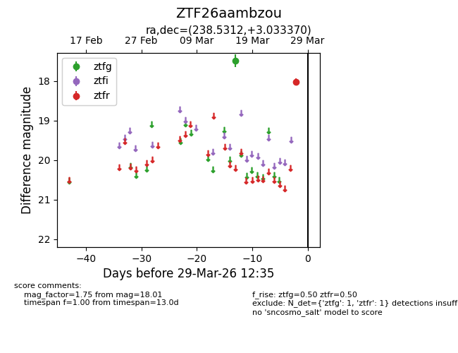
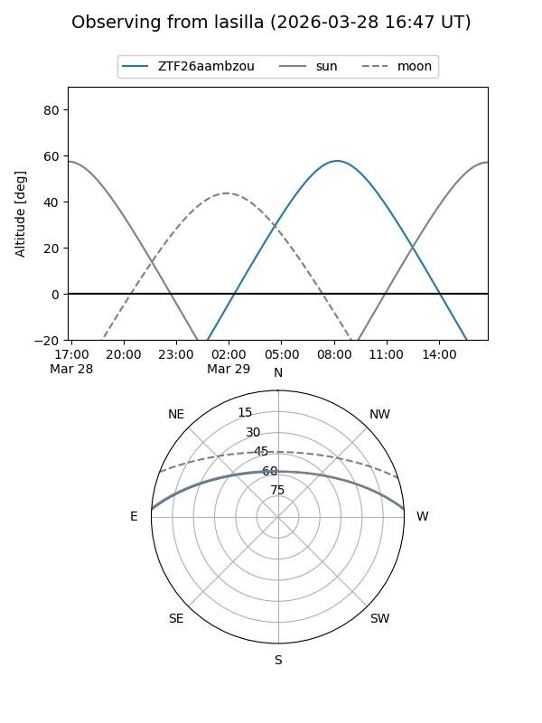
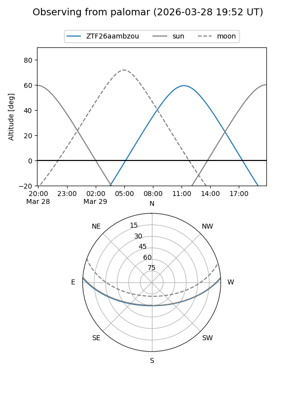

ZTF26aambzou
Target ZTF26aambzou at 2026-03-29 12:38
Aliases and brokers:
FINK: link
Lasair: link
ALeRCE: link
alt names
ZTF26aambzou (ztf,fink_ztf)
Coordinates:
equatorial (ra, dec) = 238.5312,+3.03337
equatorial (HMS+DMS) = 15:54:07.50,+03:02:00.13
galactic (l, b) = (12.1509,+40.17717)
Flags:
Photometry:
last ztfg=17.49, ztfr=18.01
1 ztfg, 1 ztfr detections
Lightcurve

Visibility


Additional plots